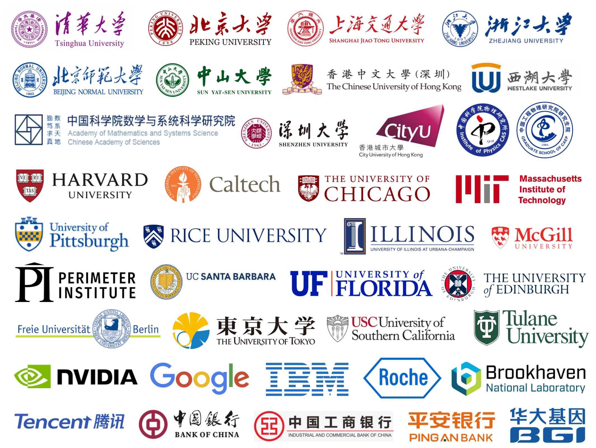

Intent Layer
AI agent, scientist, enterprise pipeline
TensorCircuit-NG unifies quantum circuits, tensor networks, machine learning backends, QPU access, and HPC execution into one programmable substrate for simulation, QML, and quantum many-body physics.
A holistic engineering architecture designed from the ground up to unify quantum compilation, high-performance computing, and agentic machine learning workflows.
How to distinguish an enterprise-grade platform from mere concept wrappers. TensorCircuit-NG delivers verified performance, peer-reviewed science, and commercial production readiness.
Proven community trust and distribution
Independently verifiable speedups
Backed by elite global institutions
Real-world pipelines in active trials
6+ years of architecture refinement
For scientific infrastructure, open source means code auditability, reproducibility, and local deployment options without proprietary lock-in.
Benchmark claims are tied to specific workloads, hardware, precision, and source scripts rather than mixed into a single universal speedup number.
Academic adoption represents a rigorous community peer-review. TensorCircuit-NG is actively used by top physicists globally to drive fundamental discoveries.
Bridging quantum software and enterprise domains. TensorCircuit-NG is selected for vertical applications where speed translates directly to cost efficiency.
Platform maturity is forged over time. TensorCircuit-NG benefits from years of structural improvements that ensure maximum stability and forward compatibility.
Reported benchmark families are normalized to TensorCircuit-NG and shown as acceleration ratios, with source notes kept in the details for auditability.
TensorCircuit-NG speedup over comparable GPU value+gradient implementations
From pharmaceuticals to deep tech infrastructure, TensorCircuit-NG provides the core mathematical engine to solve high-dimension combinatorial problems.
The primary computational backend for molecular property prediction, excited state calculations, and chemical bonding simulation at industrial scales.
Quantum Chemistry View RepositoryAdvancing quantum machine learning across robustness, plasticity in continual learning, federated quantum learning, quantum generative models, and quantum architecture search.
Artificial IntelligenceAccelerating virtual screening pipelines by simulating macromolecular structures and drug-target binding affinities through fast tensor network contraction.
Biotech & PharmaExecuting high-speed portfolio optimization, risk analysis, and arbitrage opportunity mapping using CVaR-enhanced variational algorithms.
Asset Management
Explore the underlying mathematics, software architectures, and validation methodologies of TensorCircuit-NG.
S.X. Zhang, Y.Q. Chen, et al. Detail of multi-node GPU scaling, stabilizer/qudit simulation features, and compilation pipelines.
Read on arXivPublished peer-reviewed study laying down the mathematical architecture of automatic differentiation and tensor-network simulation.
Read PaperNVIDIA's cuQuantum 23.10 benchmark features TensorCircuit as the only quantum software framework, comparing its cotengra pathfinder against cuTensorNet APIs and raw PyTorch/JAX contractions.
NVIDIA Technical Blog
Google Quantum AI and Caltech researchers utilized the platform to benchmark the gate complexity limits of learning physical unitaries and complex quantum states.
Google AI & Caltech Teams
Researchers simulated high-temperature thermodynamic states and resource scaling bounds for quantum magic, enabled by the fast JIT compilation pipeline.
MIT, Harvard, & Google co-authors
IBM Quantum researchers leveraged high-speed gradient evaluation to simulate dynamic parameterized quantum circuits free of barren plateau bottlenecks.
Dynamic Circuit Simulations
Eisert's lab employed the JAX-based backend of the simulator to perform dense gradient sweeps and evaluate the generalization bounds of quantum machine learning model architectures.
Jens Eisert Lab, Berlin
Generative quantum machine learning via denoising diffusion probabilistic models, demonstrating diffusion-based quantum data generation workflows.
Quntao Zhuang, USC
"When promotional claims begin to align, how do you judge if a quantum-classical platform is mature and ready for production? Authentic infrastructure is built on five checkable dimensions: Openness, Benchmarks, Academic citation, Industry applications, and Continuous architectural iteration."

Lead Author of TensorCircuit-NG, researching high performance quantum software, machine learning, and quantum many-body physics.
We welcome thoughtful conversations with long-term technology partners, including venture capital firms, enterprise computing groups, hyper-scale cloud providers, and academic labs interested in quantum software infrastructure.